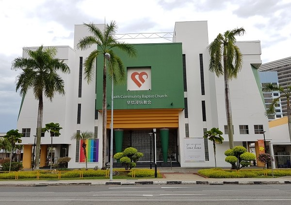
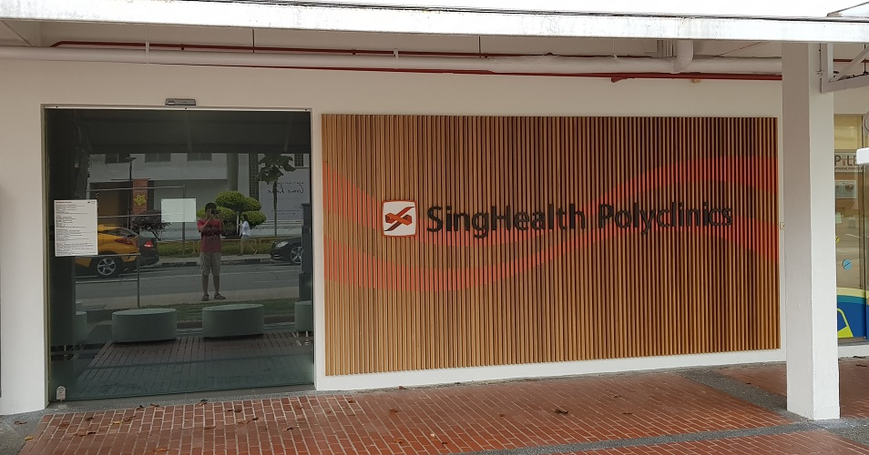
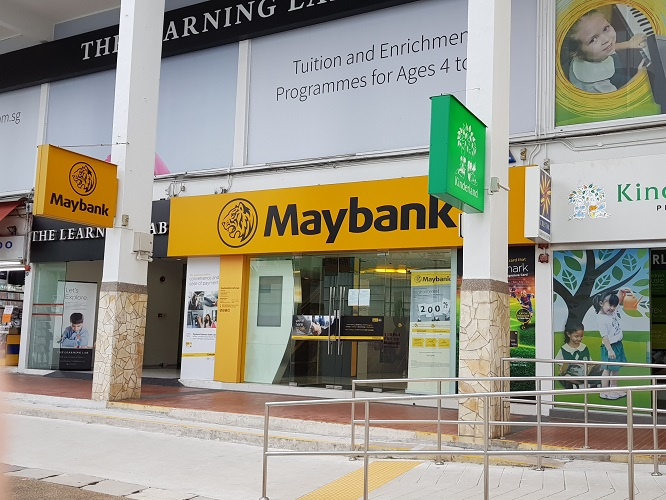
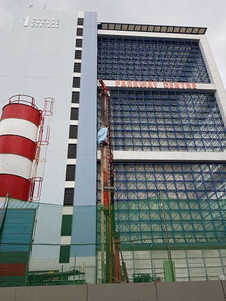
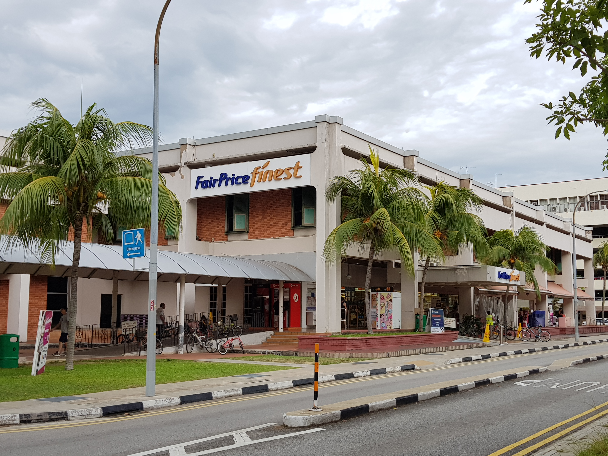
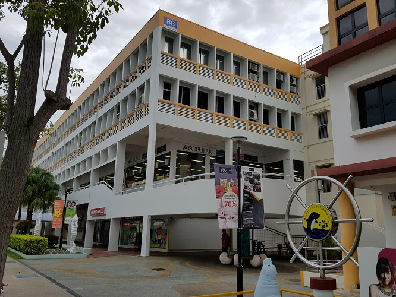

Others
Touch Centre (FCBC)

| Address: |
| 3 Marine Parade Central, Singapore 449409 |
This is a church located opposite the polyclinic, every Sunday the whole area will be crowded with people due to the church service, especially in the evening. Around 5 to 6pm, many people will be coming out of the church to go home. There will be many coaches lining up for people to board, each one going to a different area. Every time I can hear the crowd control people shouting into their megaphones telling poeple where to go.
Find out more......
Polyclinic

| Address: |
| 80 Marine Parade Central, Singapore 440080 |
This polyclinic is located right beside Blk 76, so when I was young I could occasionally see ambulances come and pick up or drop off patients.
I have only been inside once.
Maybank

| Address: |
| 87 Marine Parade Central, #01-502, Singapore 440087 |
Malayan Banking Berhad is a Malaysian universal bank, with key operating "home markets" of Malaysia, Singapore, Philippines and Indonesia. According to the Brand Finance report, Maybank is Malaysia's most valuable bank brand, the fifth top brand in Asean and ranked 83rd in the world’s most valuable bank brands.
Previously before the construction of the new MRT line, there used to be a overhead bridge above maybank linking directly to Roxy Square.
Find out more......
Parkway Central

| Address: |
| 1 Marine Parade Central, Singapore 449408 |
Parkway Centre is a commercial property which is primarily used for Commercial/Office rental and sale. I have been here many times during primary school and secondary school as this place is mainly rented by tuition centres. Most of the tuition centres I went to were all located here. On the ground floor there is also a McDonald’s and a Kopi and Tarts, where students usually buy food to bring up to tuition class to eat.
NTUC (FairPrice Finest Marine Parade Central)

| Address: |
| 6 Marine Parade Central, Singapore 449411 |
This is where my grandmother usually buys her groceries from, ever since I was young. When my cousins and I were younger, we would always accompany her and play around here. Before this place underwent renovations, it had no lift to access the second level, instead it had a massive ramp for people to push their trolleys up to reach the second floor. It also had a small café. My grandmother would always buy the coffee cake from that café for me and my cousins to eat.
Sadly, after this place was renovated, the café was no longer there, but thankfully they got rid of the massive ramp and added a travellator and a wheelchair lift, which made it much easier for people to bring their trolley up to the second floor. There is also a pharmacy on the second floor.
Marine Parade Central

| Address: |
| 86 Marine Parade Central |
This building has a few companies renting spaces inside.
But mainly I came to this building for 2 main reasons, to buy stationery and tuition. On the second floor there is a popular bookstore where I mainly go to buy stationery and on the top floor there is a tuition centre that I used to go to for Chinese tuition. My sister also goes to the music school located on the third floor.
Addresses
| Touch Centre (FCBC) |
3 Marine Parade Central, Singapore 449409 |
| Polyclinic |
80 Marine Parade Central, Singapore 440080 |
| Maybank |
87 Marine Parade Central, #01-502, Singapore 440087 |
| Parkway Central |
1 Marine Parade Central, Singapore 449408 |
| NTUC (FairPrice Finest Marine Parade Central) |
6 Marine Parade Central, Singapore 449411 |
| Marine Parade Central |
86 Marine Parade Central |